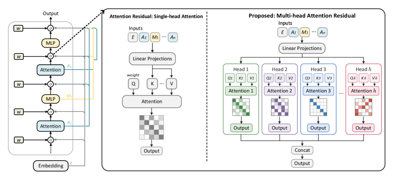
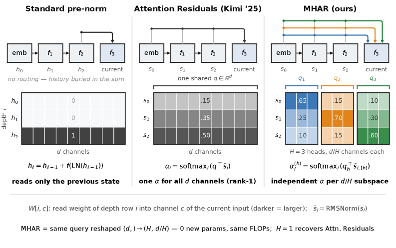
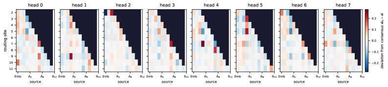
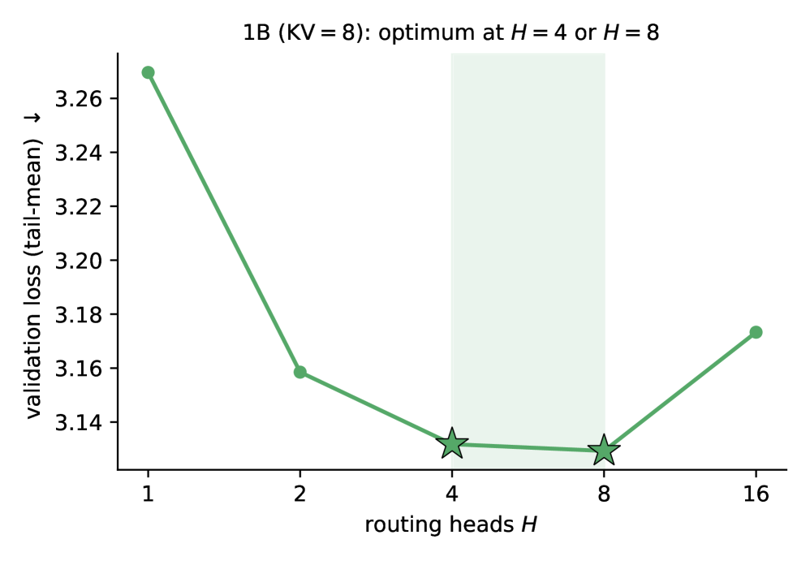
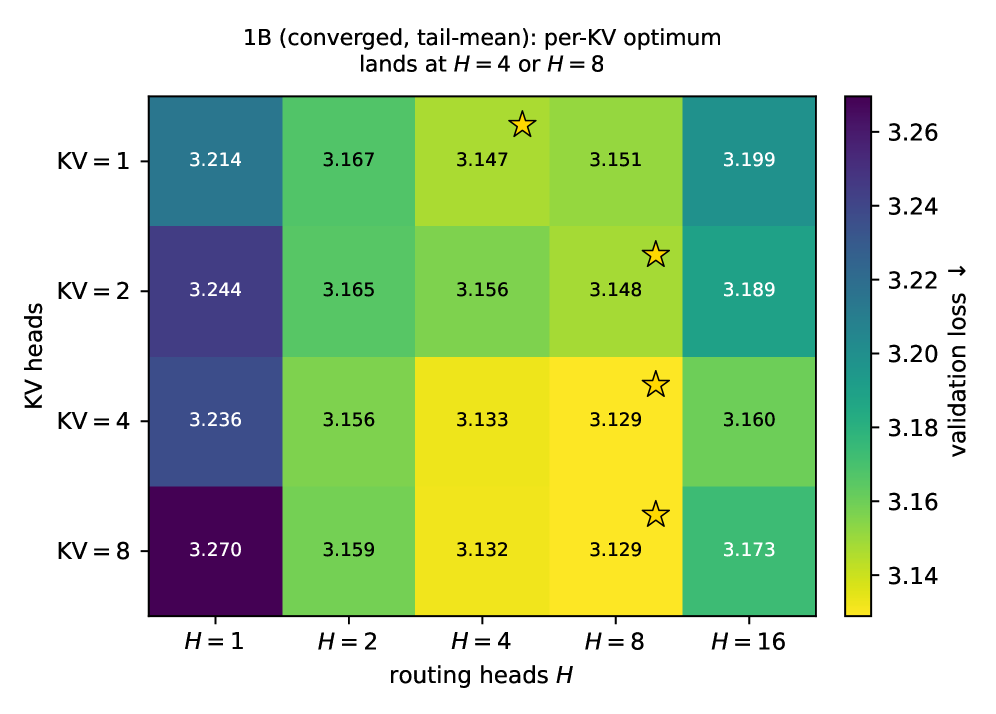
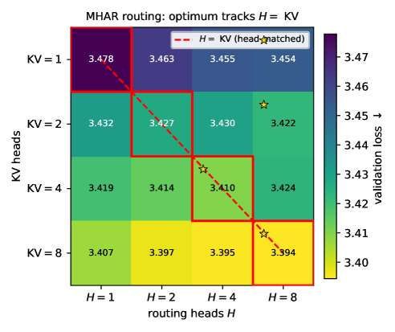
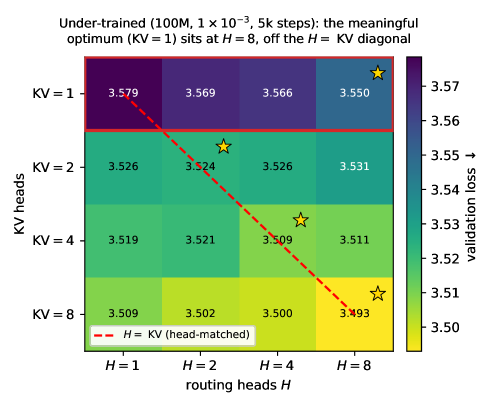
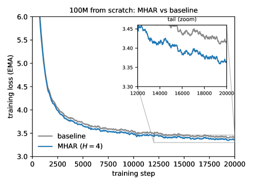

Transformer 经由一条加性残差流跨深度传播信息：每个子层只读最近的状态。注意残差（attention residuals, Kimi 2025）放松了这一点——让每个子层通过一个学习的 softmax 去关注深度历史，相当于在深度而非 token 上做注意力，使得深度历史变得可寻址。
但那个「读」用的是横跨整个宽度共享的单个 query：它把 N=2L+1 个先前来源打分并塌缩成一个关于深度的 softmax 分布，于是所有 d 个坐标都从同一个深度混合里读取。这个强制妥协的代价，随子空间对「该读哪些层」的分歧增长而上升，而分歧随模型宽度而增大。
标准 Transformer 里，注意力残差路径把每个子层的输出沿深度累加，后续子层只能读到最近一步的状态——深度历史是被「折叠」进残差流、不可寻址的。
注意残差（attention residuals）改变了这一点：它不是对 token 做注意力，而是对深度做注意力——每个子层用一个学习的软权重，从嵌入和之前每个注意力块的状态里取一个加性混合，相当于在深度上做了一次检索。

这使深度历史变得可寻址，但检索粒度是「整个宽度」：一个学习 query 给 N=2L+1 个先前来源打分，塌缩成一个关于深度的 softmax 分布，于是所有 d 个坐标从同一个深度混合去读。
当所有特征子空间被迫通过同一个深度分布去读历史时，妥协就出现了。不同子空间对「该优先读哪些层」的意见往往不一致，而这种分歧随模型宽度增长。

模型的宽度越大，装进同一分布的异质需求就越多——一个分布没法既给浅层特征读低层的语义、又给深层特征读高层的结构。这是头数（head count）成为真正设计轴的根本原因，而非可以随便拨的自由旋钮。
Multi-Head Attention Residuals（MHAR） 的做法很直接：把单个路由 query 重塑成 H 个 per-subspace（每子空间）头，每个头对深度历史拥有自己的 softmax 分布。
这样读取矩阵变成块对角（block-diagonal）：每个子空间头只读自己想读的深度源，互不干扰。重塑操作零参数、计算开销可忽略，而 H=1 时精确恢复注意残差——所以 MHAR 是注意残差的严格推广。
论文据此改写路由逻辑（forward 与 backward），并实现了融合路由的 Triton 内核：前向对深度源做 online softmax 并把 RMSNorm 融合进去；反向两遍扫描累积 softmax 耦合项 S 再重算归一化——避免物化中间矩阵，读写更省。

论文从零训练实验表明，验证损失对路由头数 H 呈 U 形：从单头（H=1，即注意残差）下降，进入一个平坦平台，最优在 H=4 或 H=8 附近。在 1B 规模同样看到这个平坦最优。

进一步过度分割（H=16）会收回部分收益——头太多反而把可共享的深度读取切得太碎。大模型最终采用 H=8。实验还对训练出的路由 query 做直接探针，证实了「学习到的子空间分歧」正是背后的驱动机制。

路由头数 H 与 KV 头数可以解耦：验证损失作为 (路由头 H, KV 头) 的二维网格同样呈平坦低谷，说明 MHAR 的这一新头维度独立于既有 KV 头维度、二者各自可调。

在去重、质量过滤、偏向 STEM 与代码的 Nemotron-based anneal 语料上从零训练，MHAR 在 100M、350M、1B 三个规模都比标准 Transformer 验证损失更低（-0.061、-0.149、-0.140），且在四种方法中每个设定都取得最好结果，收益随规模放大。
训练全程 MHAR 的损失都压在标准基线之下（FineWeb-Edu 上同样复现），说明这不是偶然撞上某个指标，而是稳定的结构收益。在 head 数与 LR 调优、以及多 seed 鲁棒性上，MHAR 相对基线也保持稳定领先。

训练速度不受损：融合路由内核（torch.compiled 参考内核 + 自研 fused routing）把训练速度和内存开销拉到与标准 Transformer 相当甚至更快，路由操作本身端到端更快。

MHAR 的洞察很朴素：既然深度读取本身是一次注意力，它就该像注意力一样多头。单头把整个宽度的读取需求压进一个深度分布是浪费——把路由 query 拆成块对角的 per-subspace 头后，每个子空间能读自己想读的深度，且零参数、几乎零计算。
它用「头数是否可调」验证了子空间分歧假说：H 的 U 形损失曲线说明每个子空间确实需要一定的独立读取自由度，但也不能无限切分。对想给现有 Transformer 架构加「深度可寻址性」又不想要代价的团队，这是一条几乎免费的升级路径。
参考：https://arxiv.org/html/2607.27230v2